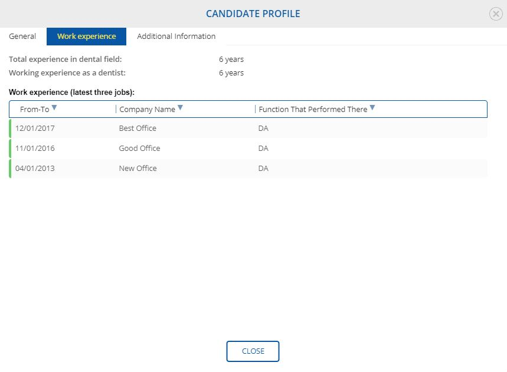
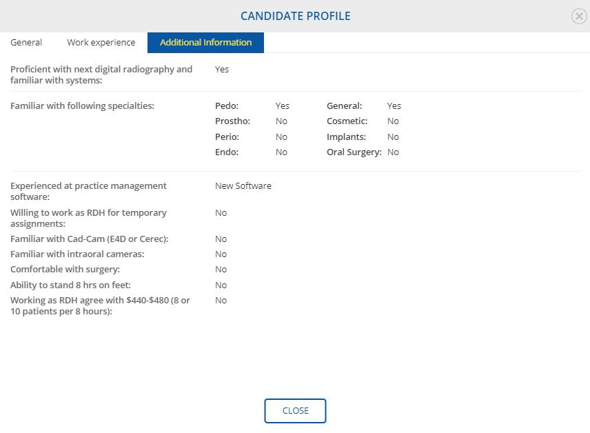

A user can observe a number of applicants for the posting by monitoring a column “Applicants”.
If a user would like to review candidates, one should select a posting and click “View Applicants” button.
View Applicants - VIew TBD
If a doctor needs to get more information about candidate, then he should click image of the candidate or “Last Name”.
A user can review General information, experience and some additional information in order to make decision about potential hiring.
Applicant - General - View - TBD
Work experience
At this section, a doctor can review work experience of a candidate.

Additional Information
In some cases, candidates provide other information about their experience.
